In the last chapter, you were introduced to ggplot2, the tidyverse package that helps you build graphics, charts, and figures. In this chapter, we’ll take your ggplot knowledge to the next level. We encourage you to treat this chapter as a reference.
8.1 Learning goals for this chapter
In this chapter, we will cover the following topics:
How to prepare and build a line chart
How to use themes to change the looks of a chart
More about aesthetics in layers!
Faceting, or making multiple charts from the same data
How to make interactive plots with Plotly
8.2 References
ggplot2 has a LOT to it and we’ll cover only the basics. Check out the Resources chapter for more references, tutorials, etc.
8.3 Set up your notebook
This week, we’ll return to our Military Surplus project, but add a new Quarto Document.
Open your name-military-surplus project.
Create a new Quarto Document.
Set the title as “Military Surplus figures”
Remove the rest of the boilerplate template.
Save the file and name it 03-ggplot.qmd.
Create a setup chunk and load the tidyverse and janitor libraries. Also load a library called scales, though you shouldn’t have to install it as it comes with the tidyverse package.
You’ll also need to install the scales package and include that in your library.
In your Console, run install.packages("scales")
Then back in your notebook add library(scales) to your setup chunk.
And lastly we need to create a folder that we’ll need later.
In your Files pane, use the New Folder icon to create a new folder and call it figures. This is where we’ll export copies of our plotted charts.
8.3.1 Let’s get the data
We’ll be importing the cleaned data that has all the states.
Create a new section that notes you are importing
Use read_rds() to import the file and save it into an object called leso. The file should be at data-processed/01-leso-all.rds if you named it correctly in our analysis .
For our first chart here we are looking to plot the total acquisitions value for each year in the state of Texas. It can sometimes help to draw on paper the chart you are hoping to make so you can see how to format the data to make it.
This is the data and chart we hope to build:
On order to make that, we’ll need to summarize our data by the year of the shipping date, then sum together all the value of the equipment.
But we don’t have this data in the format, so we need to make it.
8.4.1 Working through logic
Data visualization is an iterative process: you may prepare the data, do the visualization, and then realize you need to prepare the data a different way. There can be a lot of trial and error: you’re often testing different things to see what works.
There are lots of choices we could make on how to do this, and I explored several different paths while making this chart. While I won’t go through every possible scenario, I’ll try to explain why I made the decisions I did. It’s not like other ways are wrong, they just have different pros and cons.
Walking through this with the chart first:
Along the X axis we want to plot each year. Since our data starts as individual transfers and their date, this is a clue that we need to group by the year of that shipping date.
Along the Y axis we want to plot the value of all the equipment in Texas. That’s a clue that we need to summarize our data to add up the value of the equipment.
The most exploration came around how I grouped this data by year. There are a myriad of ways to do this, like using year() to pluck the year from the shipping date to make a number like 2023 or convert that to text as “2023”. I chose to create a “floor date” so I end up with a real date because it gives me more flexibility with plotting. ggplot has some tools where I can format the date the way I want, though I admit I had to go learn about them to do this lesson!
The function floor_date() rounds a date down to a common value, but it remains a real date. If I convert both “2023-10-18” and “2023-10-28” to a floor_date unit of “year” then they both end up as “2023-01-01”, the first day of the year. If I choose to set floor_date as a unit of “month” then both dates end up as “2023-10-01”, the first day of the month in each year. It’s like we are rounding the date down to a specific unit. The key here is it remains a real date with properties like year, month, week and day. I’ll draw upon those properties later.
We are going to “create” this date as we group our data. You can read more about this in appendix chapter Grouping by dates.
8.4.2 Wrangling the data
Let’s filter to the data we want (Texas data before 2023) and group it by the year of the ship_date and summarize to sum the total_value.
Add a new section: Prepare Texas total values data
Add a new chunk and the code below. We’ll pick it apart after.
1tx_values <- leso |>filter(2 state =="TX", ship_date <"2023-01-01" ) |>3group_by(year =floor_date(ship_date, unit ="year")) |>4summarize(yearly_value =sum(total_value))5tx_values
1
We start by creating a new object to shove all this stuff into: tx_values. Then we start with the data …
2
You should be familiar enough with the filtering by now to understand what we are doing, but might not realize why. Filtering for just Texas rows makes sense because that is our focus, but you might not snap that the data for the most recent year is incomplete until you see the plot. It’s important to recognize the date range of the data you are plotting so you don’t compare a partial year to a complete one.
3
Inside this group_by() we have the code that makes our floor date. We start as we often do by naming the new column made by the group: year. We then use the floor_date() function on the ship_date variable, setting the unit to “year”. You can see the result of this in the return: Any row with a date within the year “2010” was given a date of “2010-01-01” and then summed together.
4
The last line is the summarize() function where we add all the total_values together. We first named the column yearly_value since that is what we are creating.
5
At the end, we print out the contents of the tx_values object we created.
8.4.3 Plot the chart
Alright, so now let’s get ready to use the ggplot() function. I want you to create the plot here one step at a time so you can review how the layers are added.
In this new plot, we’ll learn about a new geom layer: geom_line() (recall that in the last chapter, we learned about geom_point() and geom_col()).
Start a new section. Note we are plotting Texas values.
Add and run the ggplot() line first (but without the +)
Then add the + and the geom_point() and run it.
Then add the + and geom_line() and run it.
Then add the + and labs(), and run everything.
1ggplot(tx_values, aes(x = year, y = yearly_value)) +2geom_point() +3geom_line() +4labs(title ="Military surplus acquisitions in decline", subtitle =str_wrap("After a spike in 2014, the value of controlled military surplus equipment transfered from the U.S. military to local law enforcement agencies has dropped in recent years. Controlled equipment includes items like weapons that must be returned to the military for disposal."),x ="Year", y ="Value of acquisitions",caption ="Source: Law Enforcement Support Office" )
1
we create the graph
2
adding the points
3
adding the lines between the points
4
we add the labels. Note the str_wrap() function we’ve used with subtitle = which keeps the text from running outside the chart.
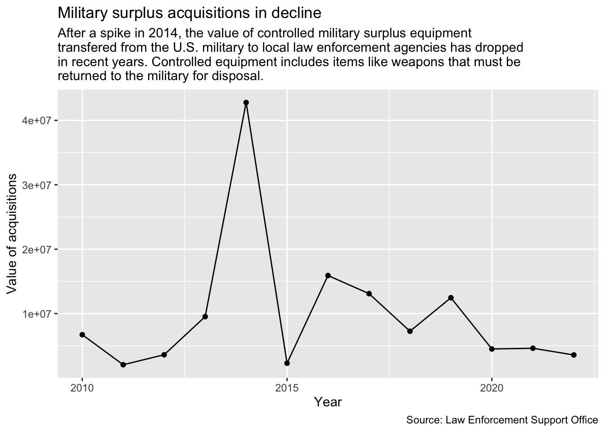
8.4.4 Cleaning Up
Alright, so we have a working plot! But there’s a couple things that are a bit ugly about this plot. First, I’m not digging the weird numbers on the side (what the heck does 1e+07 even mean?!). If we go back up and look at the output from tx_values we can see the yearly_value numbers are pretty large. These large numbers are causing R to read our numbers as “scientific notation” (a math-y way of reading large numbers). For example, the total cost of supplies in 2014 was 42,949,729 (that’s the first spike in our figure, around the 4e + 07 mark). But what a pain to read!
8.4.4.1 Using scales
There are a number of ways we could fix this. We could go back into the code block where we prepare the data and divide that value by “1000000” and call the values “per million”. Or, we can do what I did and use the scales package to “scale” the output for presentation without changing the underlying number.
Using functions from the scales package can be esoteric and unintuitive, but most of the things you would regularly need are covered in the Position and Scales chapter of the ggplot2 book. It is from there that we learn about using a function scale_y_continuous(), the label = argument and the the scale_dollar() function.
After the geom_line() line, add the scale_y_continuous function as indicated below.
ggplot(tx_values, aes(x = year, y = yearly_value)) +geom_point() +geom_line() +1scale_y_continuous(labels =label_dollar()) +labs(title ="Military surplus acquisitions in decline", subtitle =str_wrap("After a spike in 2014, the value of controlled military surplus equipment transfered from the U.S. military to local law enforcement agencies has dropped in recent years. Controlled equipment includes items like weapons that must be returned to the military for disposal."),x ="Year", y ="Value of acquisitions",caption ="Source: Law Enforcement Support Office" )
1
This is the added line for the scale
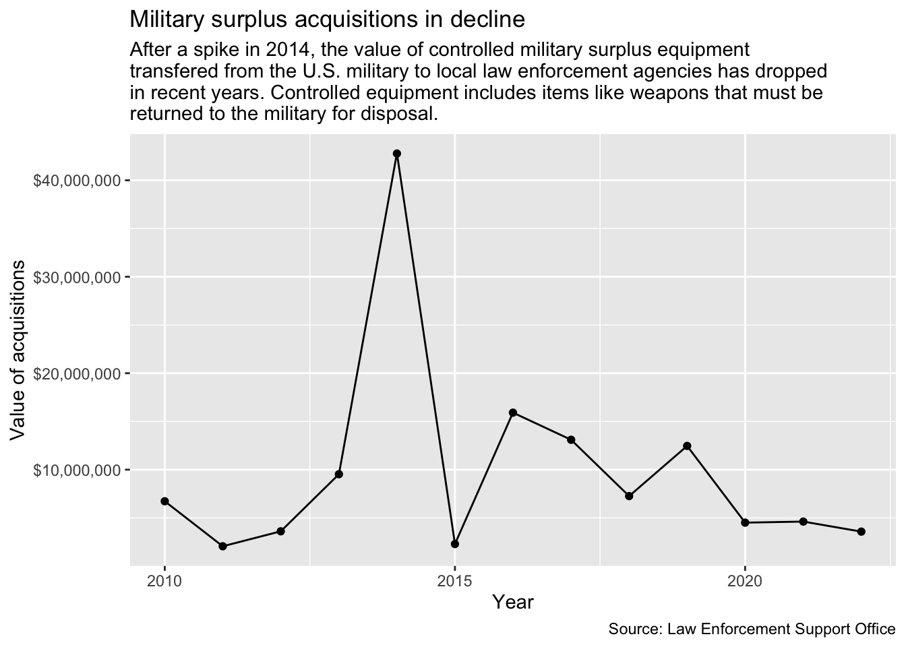
I added this in the middle of the code because I like to keep the labs() at the bottom of the chart. It doesn’t really matter. What it did was change the labels on the Y axis to use a currency format. Let’s walk through it:
The scale_y_continous() function allows modification to the Y axis, and there is a companion for the X axis. The term “continuous” refers to the values being numbers. There are similar functions for categories (scale_*_discrete()) and dates (scale_*_date()). They all allow modification of things like the labels, grid lines and axis names. (The * there is placeholder for x or y.)
We use that function to set our “labels” with another function from the scales package, label_dollar().
Again, the best resource for these type of things is the Scales chapters in the ggplot2 book.
To show just how much granularity you have with ggplot, let’s make one more change to this chart. Those dollar values are still pretty large, and it might be nice to show them in millions of dollars, like “$10M”.
Edit the label_dollar() function to add this argument inside: scale_cut = cut_long_scale().
ggplot(tx_values, aes(x = year, y = yearly_value)) +geom_point() +geom_line() +1scale_y_continuous(labels =label_dollar(scale_cut =cut_long_scale())) +labs(title ="Military surplus acquisitions in decline", subtitle =str_wrap("After a spike in 2014, the value of controlled military surplus equipment transfered from the U.S. military to local law enforcement agencies has dropped in recent years. Controlled equipment includes items like weapons that must be returned to the military for disposal."),x ="Year", y ="Value of acquisitions",caption ="Source: Law Enforcement Support Office" )
1
We’re editing this line to add the scale_cut argument to label_dollar().
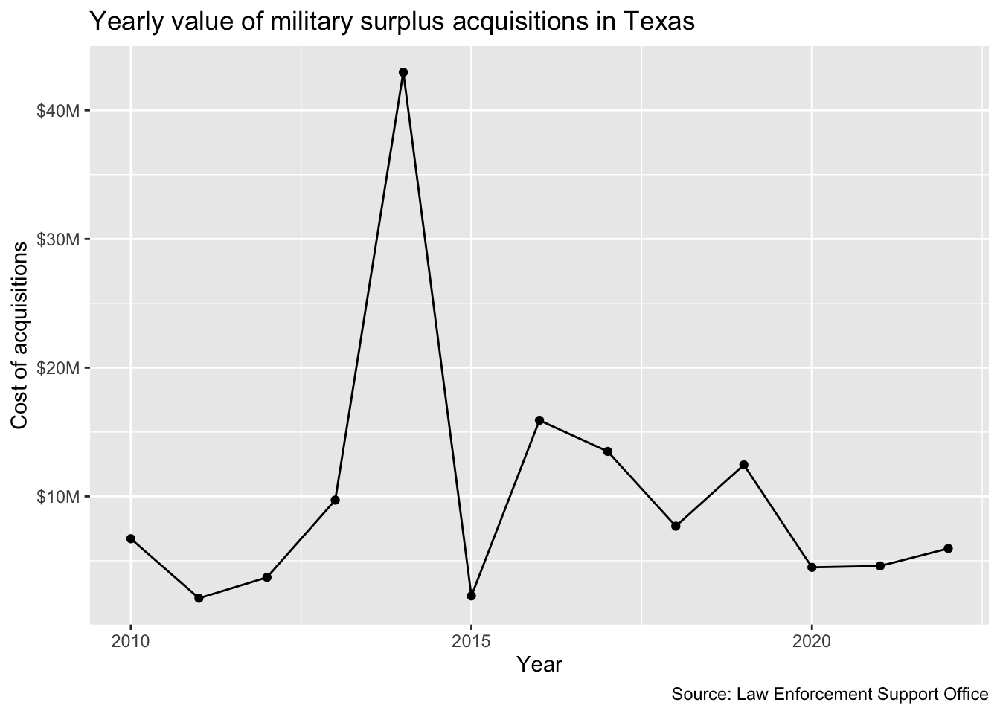
Now those Y axis labels are nice and easy to read and understand.
8.4.4.2 Setting breaks
Let’s show one more change. Notice how the grid lines along the X axis don’t fall along every year? We are getting our “breaks” set every five years, but our “minor breaks” (the fainter lines between the five year increments) sit in the middle of a year. That makes it a little harder to read each year, or even to understand each of those dots fall on a year. We can use the scale_x_date() function to change those by adjust those minor breaks.
In the global aes() function, wrap the date value inside a function called date(). Currently our “date” is really a calendar date/time datatype called <POSIXct>. I’ve found our next function can be pretty picky about wanting a specific <date> datatype so we are adjusting it to avoid an error.
After the scale_y layer, add a new scale_x_date() later as indicated below.
tx_values |>1ggplot(aes(x =date(year), y = yearly_value)) +geom_point() +geom_line() +scale_y_continuous(labels =label_dollar(scale_cut =cut_long_scale())) +2scale_x_date(minor_breaks =breaks_width("1 year")) +labs(title ="Military surplus acquisitions in decline", subtitle =str_wrap("After a spike in 2014, the value of controlled military surplus equipment transfered from the U.S. military to local law enforcement agencies has dropped in recent years. Controlled equipment includes items like weapons that must be returned to the military for disposal."),x ="Year", y ="Value of acquisitions",caption ="Source: Law Enforcement Support Office" )
1
Surround “year” with date() function.
2
This is the added later for scale_x_date().
OK, now the fainter “minor breaks” lines fall on each year, making them a little easier for the eye to track. Again, I had to do some digging to figure that out.
8.4.5 Saving plots as an objects
Sometimes it is helpful to push the results of a plot into an R object to “save” those configurations. You can continue to add layers to this object, but you won’t need to rebuild the main portions of the chart each time. We’ll do that here so we can explore themes next.
Edit your Texas plot chunk to save it into an R object called tx_plot.
Then call it after the code so you can see it.
1tx_plot <-ggplot(tx_values, aes(x =date(year), y = yearly_value)) +geom_point() +geom_line() +scale_y_continuous(labels =label_dollar(scale_cut =cut_long_scale())) +scale_x_date(minor_breaks =breaks_width("1 year")) +labs(title ="Military surplus acquisitions in decline", subtitle =str_wrap("After a spike in 2014, the value of controlled military surplus equipment transfered from the U.S. military to local law enforcement agencies has dropped in recent years. Controlled equipment includes items like weapons that must be returned to the military for disposal."),x ="Year", y ="Value of acquisitions",caption ="Source: Law Enforcement Support Office" )2tx_plot
1
We edit this line to add the object at the beginning.
2
Since we saved the plot into an R object above, we have to call it again to see it. We save graphs like this so we can reuse them.
We can continue to build upon the tx_plot object like we do below with themes, but those changes won’t be “saved” into the R environment unless you assign it to an R object.
8.5 Themes
The look of the graph is controlled by the theme. There are a number of preset complete themes you can use. Let’s look at a couple.
Create a new section saying we’ll explore themes.
Add the chunk below and run it.
tx_plot +theme_minimal()
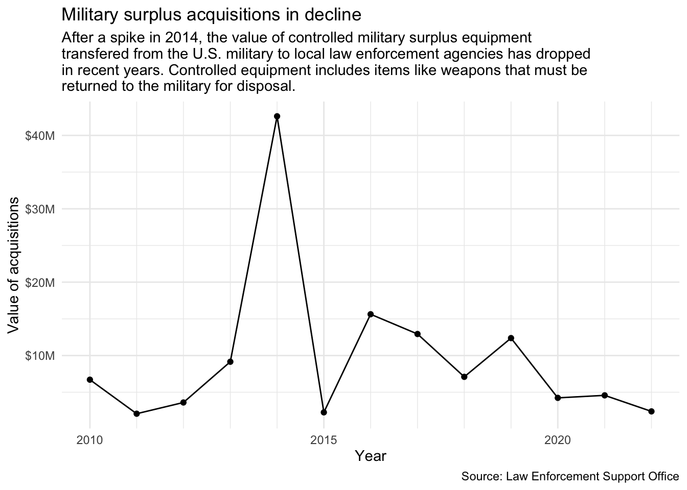
This takes our existing tx_plot and then applies the theme_minimal() look to it. This is actually our “Goal graphic” that we were shooting for at the beginning of the lesson!
There are a number of themes built into ggplot, most are pretty simplistic.
Edit your existing chunk to try different themes. Some you might try are theme_classic(), theme_dark() and theme_void(). You can see a list here.
8.5.1 More with ggthemes
There are a number of other packages that build upon ggplot2, including ggthemes.
In your R console, install the ggthemes package using the install.packages() function: install.packages("ggthemes")
Add the library(ggthemes) at the top of your current chunk.
Update the theme line to view some of the others options noted below.
OK, our Texas military surplus information is fine … but how does that compare to neighboring states? Let’s work through building a new chart that shows all those steps. It’s essentially the same chart as we did above, but adding the bordering states along with Texas.
Here is the data and image we are trying to make:
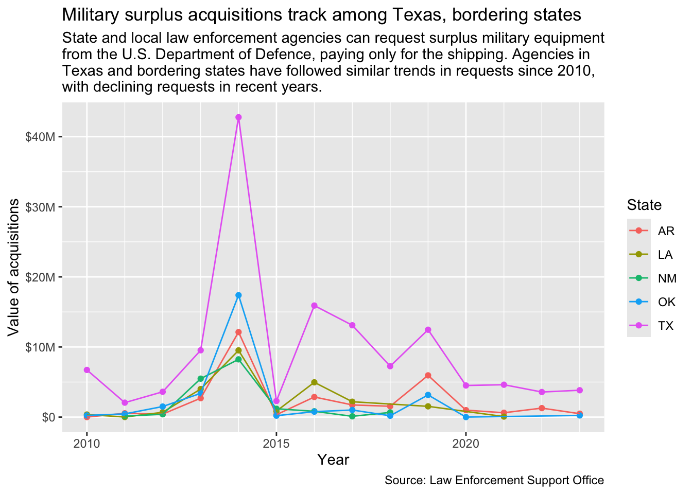
8.6.1 Prepare the data
We need to go back to our original leso data to get the additional states. But we also know now that we need to create a “floor_date” that has a <date> datatype. Let’s do that as we prepare the data instead of while we are grouping. I’ll sometimes go back into my cleaning notebook to add something like this, but we won’t go quite that far with this.
In the interest of time, I’ll supply the code with annotations to explain each line.
Add a new headline and text to describe you are building this multi-state chart.
Add the code chunk below. Make sure you understand what each line is accomplishing. (You might even build it line by line so you can see that!)
We create a new object to hold the data. We fill that starting with leso.
2
We filter the state column for our list of five states. Note we are using %in% like we did in Chapter 6, but we’re doing it right inside the filter.
3
Here, inside a mutate(), we create the new variable year and fill it with the floor_date of our shipping date based on the year. We then turn that into a <date> datatype.
4
We group by state and year. This is much cleaner now that we’ve already created a year value.
5
Our summarize to total the costs.
6
And lastly, we print the new object so we can see it.
8.6.2 Plot the chart
In our plot we need a different line for each state. To do this you would use the color aesthetic aes() in the geom_line() geom. Recall that geoms can have their own aes() variable information. This is especially useful for working with a third variable (like when making a stacked bar chart or line plot with multiple lines). Notice that the color aesthetic (meaning that it is in aes) takes a variable, not a color. You can learn how to change these colors here. For now, though, we’ll use the ggplot default colors.
Add a note that we’ll now build the chart.
Add the code chunk below and run it. Look through the comments so you understand it.
1ggplot(region_data,2aes(x = year, y = yearly_value)) +3geom_point() +4geom_line(aes(color = state)) +5scale_y_continuous(labels =label_dollar(scale_cut =cut_long_scale())) +6scale_x_date(minor_breaks =breaks_width("1 year")) +labs(title ="Military surplus acquisitions track among Texas, bordering states",subtitle =str_wrap("State and local law enforcement agencies can request surplus military equipment from the U.S. Department of Defence, paying only for the shipping. Agencies in Texas and bordering states have followed similar trends in requests since 2010, with declining requests in recent years."),x ="Year", y ="Value of acquisitions",7caption ="Source: Law Enforcement Support Office")
1
Plotting the region_data object
2
Set set the x and y axis
3
Adds the points
4
Adds the line, coloring them based on the state values
5
Fixes our labels on the y axis.
6
Fixes our minor breaks on the x axis.
7
Adding all our labels with labs() arguments.
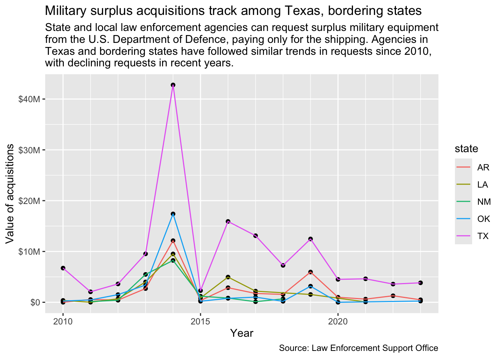
Adding this aesthetic not only added color to the lines, it added a legend so we can tell which is which. It’s important to understand that we had to use an aes() function here because we were pulling from the data to decide how many colors to use. If we had tried to build this plot without the added color aesthetic, it wouldn’t plot right because it wouldn’t how how to split the lines.
Notice that only the lines changed colors, and not the points? This is because we only included the aesthetic in the geom_line() geom and not the geom_point() geom.
Edit your geom_point() to add aes(color = state).
Also edit the labs() function to add color = "State".
ggplot(region_data,aes(x = year, y = yearly_value)) +1geom_point(aes(color = state)) +geom_line(aes(color = state)) +scale_y_continuous(labels =label_dollar(scale_cut =cut_long_scale())) +scale_x_date(minor_breaks =breaks_width("1 year")) +labs(title ="Military surplus acquisitions track among Texas, bordering states",subtitle =str_wrap("State and local law enforcement agencies can request surplus military equipment from the U.S. Department of Defence, paying only for the shipping. Agencies in Texas and bordering states have followed similar trends in requests since 2010, with declining requests in recent years."),x ="Year", y ="Value of acquisitions",caption ="Source: Law Enforcement Support Office",2color ="State")
1
Color aesthetic added here.
2
Adding color = "State" here redraws the title above the color legend.
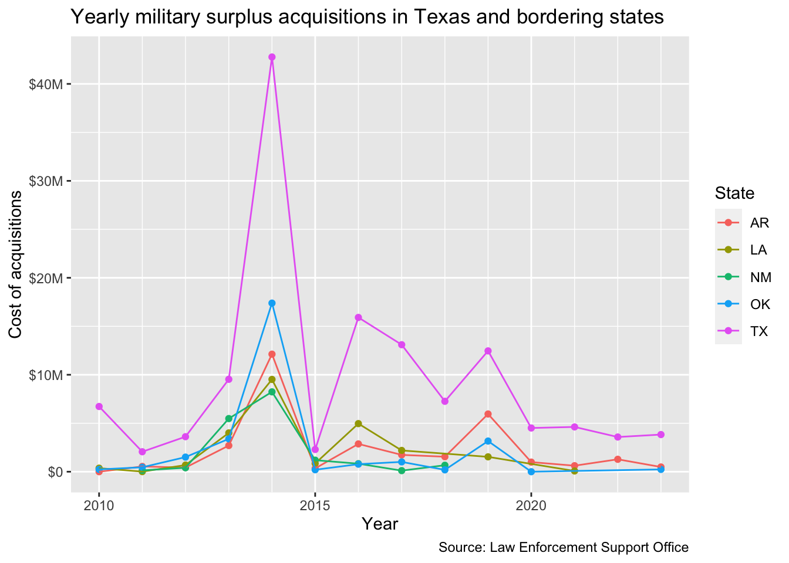
OK, you have a line chart for reference!
8.7 On your own
I want you to make a line chart of military surplus acquisitions in three states that are different from the five we used above. This is very similar to the chart you just made, but with different values.
Some things to do/consider:
Do this in a new section and explain it.
You’ll need to prepare the data just like we did above to get the right data points and the right states.
I really suggest you build both chunks (the data prep and the chart) one line at a time so you can see what each step adds.
8.8 Tour of some other adjustments
These examples show how to tweak different parts of charts.
Add a headline/text that says you’ll tour plot variables.
Add the code below and run it.
As you go through the other examples in this section you can just adjust your current chunk instead of adding new ones.
8.8.1 Line width
ggplot(region_data,aes(x = year, y = yearly_value)) +geom_point(aes(color = state)) +1geom_line(aes(color = state), size =1.5) +scale_y_continuous(labels =label_dollar(scale_cut =cut_long_scale())) +scale_x_date(minor_breaks =breaks_width("1 year")) +labs(x ="Year", y ="Value of acquisitions",caption ="Source: Law Enforcement Support Office",color ="State")
1
You can set the line width for a geom, but note it is taking an inputted value, not one from the data. This is why it is outside the aes() function.
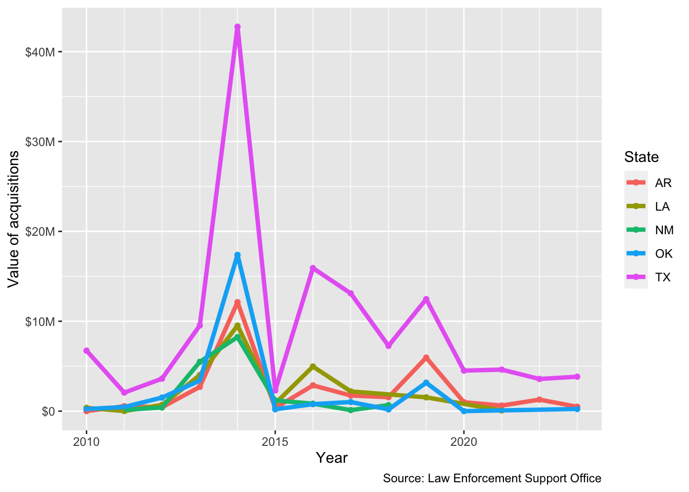
8.8.2 Line type
This example adds a linetype = state to the ggplot aesthetic. This gives each state a different type of line.
ggplot(region_data,aes(x = year, y = yearly_value)) +geom_point(aes(color = state)) +1geom_line(aes(color = state, linetype = state), size = .5) +scale_y_continuous(labels =label_dollar(scale_cut =cut_long_scale())) +scale_x_date(minor_breaks =breaks_width("1 year")) +labs(x ="Year", y ="Value of acquisitions",caption ="Source: Law Enforcement Support Office",color ="State")
1
We add the linetype here, but have to put it INSIDE the aes() now because we are “mapping” the type based on values in the state variable.
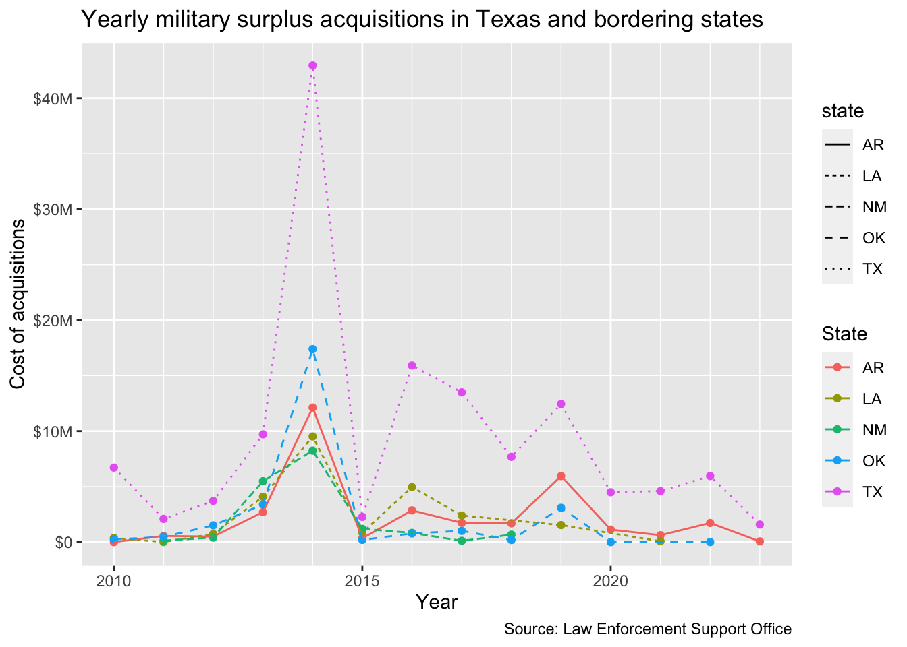
But note that ggplot added a new legend because it takes the name from the variable “state”. We can fix this through overiding it in the labs() function.
ggplot(region_data,aes(x = year, y = yearly_value)) +geom_point(aes(color = state)) +geom_line(aes(color = state, linetype = state), size = .5) +scale_y_continuous(labels =label_dollar(scale_cut =cut_long_scale())) +scale_x_date(minor_breaks =breaks_width("1 year")) +labs(x ="Year", y ="Value of acquisitions",caption ="Source: Law Enforcement Support Office",1color ="State", linetype ="State")
1
We add linetype = "State" to the labs() function, which would collapse everything into a single legend.
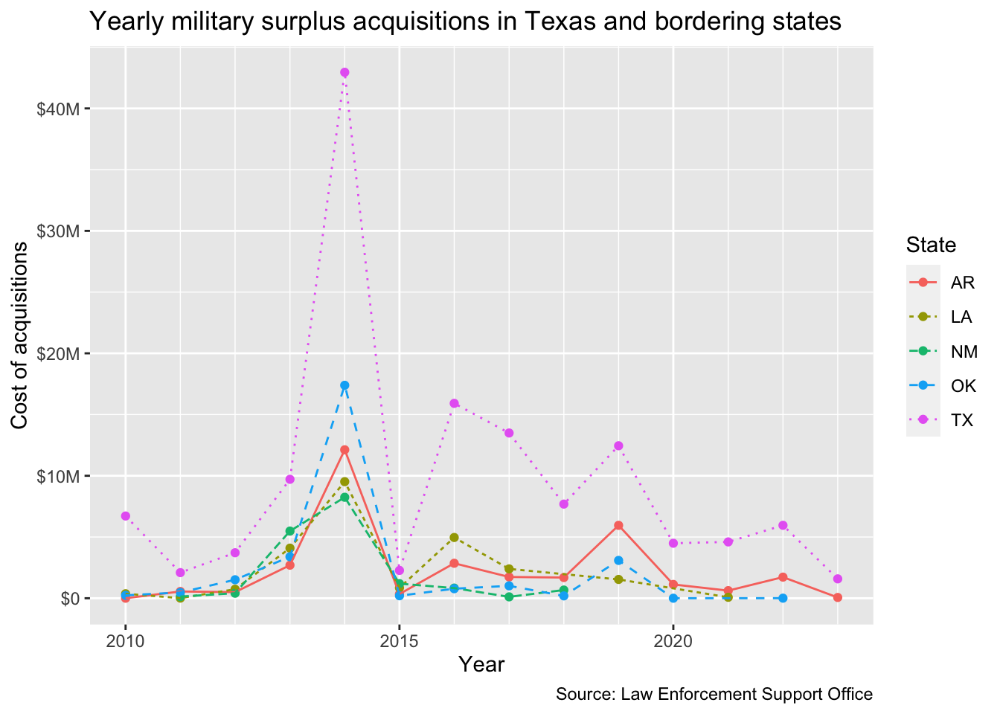
8.9 Facets
Facets are a way to make multiple graphs based on a variable in the data, as it creates a bunch of mini charts you can compare among each other. There are two types, the facet_wrap() and the facet_grid(). There is a good explanation of these in R for Data Science.
We’ll start with the chart we have already, and then split it into facets by state.
Start a new section about facets
Add the code below to create your chart and view it. This is the same plot we’ve already created
ggplot(region_data,aes(x = year, y = yearly_value)) +geom_point(aes(color = state)) +geom_line(aes(color = state, linetype = state), size = .5) +scale_y_continuous(labels =label_dollar(scale_cut =cut_long_scale())) +scale_x_date(minor_breaks =breaks_width("1 year")) +labs(title ="Military surplus acquisitions track among Texas, bordering states",subtitle =str_wrap("State and local law enforcement agencies can request surplus military equipment from the U.S. Department of Defence, paying only for the shipping. Agencies in Texas and bordering states have followed similar trends in requests since 2010, with declining requests in recent years."),x ="Year", y ="Value of acquisitions",caption ="Source: Law Enforcement Support Office",color ="State", linetype ="State") +1facet_wrap(~ state)
1
This is the only line we added, setting a facet wrap to split on the state.
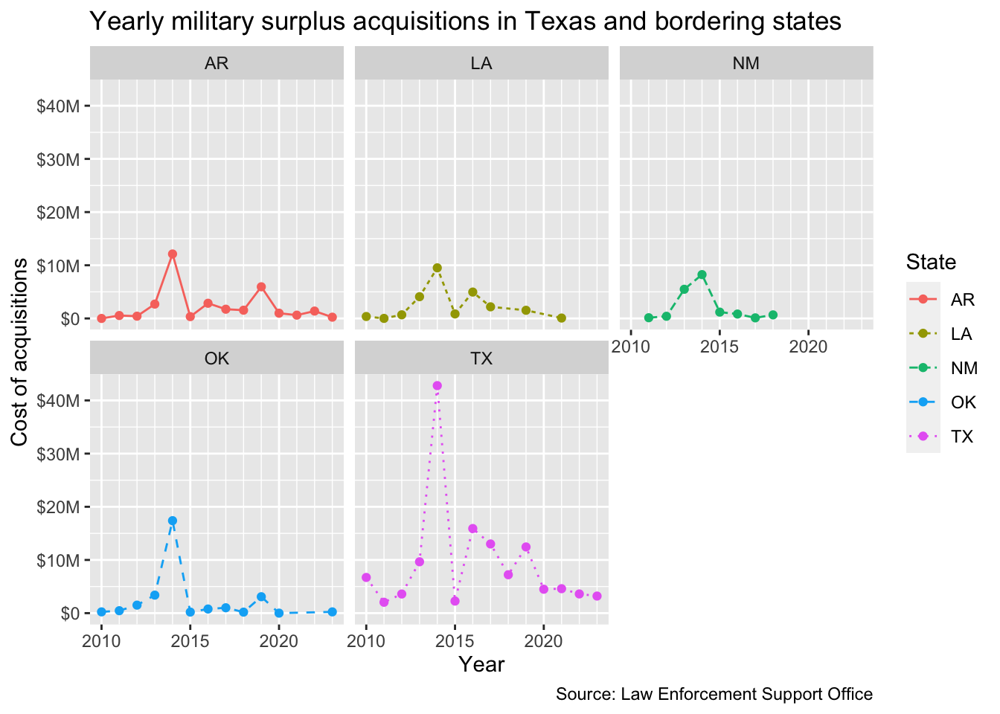
Since each state facet is labeled, we don’t really need the color legend, so we can use the theme() function to override that.
Add the last line here to remove the legend.
ggplot(region_data,aes(x = year, y = yearly_value)) +geom_point(aes(color = state)) +geom_line(aes(color = state, linetype = state), size = .5) +scale_y_continuous(labels =label_dollar(scale_cut =cut_long_scale())) +scale_x_date(minor_breaks =breaks_width("1 year")) +labs(title ="Military surplus acquisitions track among Texas, bordering states", x ="Year", y ="Value of acquisitions",caption ="Source: Law Enforcement Support Office",color ="State", linetype ="State") +facet_wrap(~ state) +1theme(legend.position ="none")
1
Here we set the legend.position to “none”, which is the answer to remove it. We could also set that to “bottom” or “left” to move it, if that was our desire. It is not, but you can try it if you like.
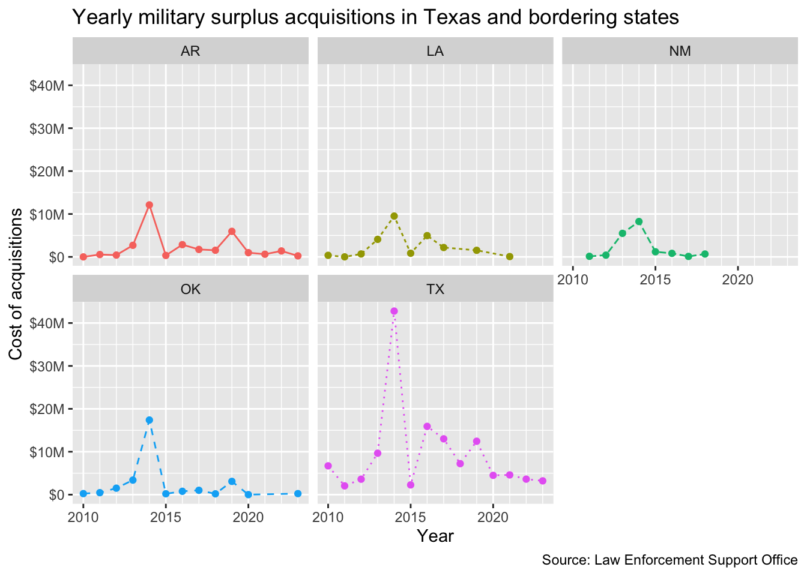
8.9.1 Facet grids
A facet_grid() allows you to plot on a combination of variables. We don’t really have enough variables to compare with our military surplus data but we can show this with the penguins data we used in the last chapter.
This chart compares the flipper length and body mass, but it does so for each species of bird by their gender.
This drops any rows that are missing values, as some don’t have sex marked.
2
Our ggplot chart, much like we did in the last chapter, comparing flippers to weight.
3
We add the points and color them to distinquish the sex of the birds.
4
We add the facet_grid that splits the chart by both sex and species.
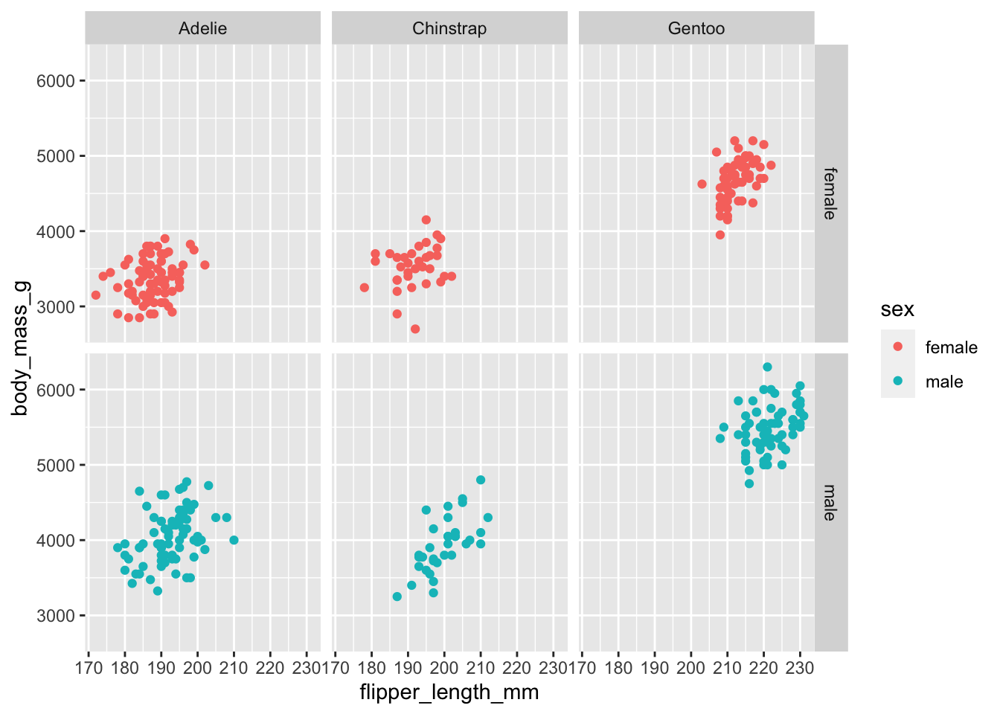
8.10 Saving plots as files
Getting a ggplot chart to look just right can be challenging because the rendering of it in your notebook is dependent on your screen size and a bunch of other variables. When I’m having trouble sizing everything right, I follow these tips:
I use str_wrap() around my subtitle to keep it from running off the page.
Once I get the labs and themes as close as I can, I push the chart into an R object.
BEFORE printing that object to my screen, I save the plot to my hard drive using the ggsave() function. It’s important to save it to disc before printing to your screen because that changes the sizing. Following R convention, I save plots into a folder called figures/. (You might need to create a “figures” folder first!)
I then use Markdown to print the graphic to the notebook as an image using using this syntax. It’s like making a hyperlink, but it starts with ! before the square brackets. The text inside the square brackets end up as caption displayed below the chart: .
Here is how I would do this with our first line chart:
Make a new section saying you are practicing saving a plot
In your Files pane, use the New folder button to create a folder called figures.
Add the chunk below and run it.
tx_plot_2save <-ggplot(tx_values, aes(x =date(year), y = yearly_value)) +geom_point() +geom_line() +scale_y_continuous(labels =label_dollar(scale_cut =cut_long_scale())) +scale_x_date(minor_breaks =breaks_width("1 year")) +labs(title ="Military surplus acquisitions in decline", subtitle =str_wrap("After a spike in 2014, the value of controlled military surplus equipment transfered from the U.S. military to local law enforcement agencies has dropped in recent years. Controlled equipment includes items like weapons that must be returned to the military for disposal."),x ="Year", y ="Value of acquisitions",caption ="Source: Law Enforcement Support Office" ) +theme_minimal()ggsave("figures/tx-plot.png")
Saving 7 x 5 in image
Now that the chart is saved to your computer, you can use Markdown to display the image in your notebook.
After your code chunk add the Markdown code below. This is in the text part of your notebook like a sentence or headline, but you are inserting an image. Note I’m leaving out the caption text between the square brackets because we already have a headline on the chart.

When you add this, it should renders like this in your notebook:
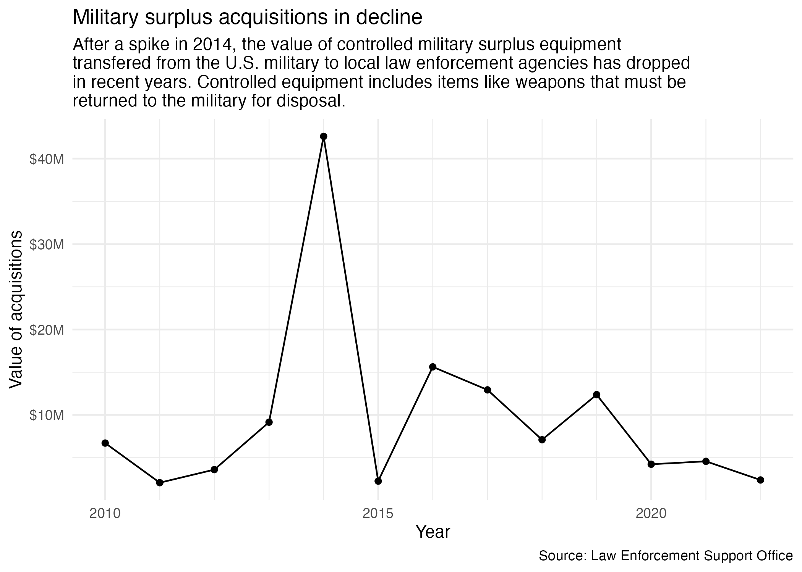
It might not look very different here, but in my experience it is the most consistent method to get a nice plot display. I really only bother with all this if I’m having trouble getting everything to fit or I need to use the image outside of my notebook.
Another key advantage to this is you can now use can reference that same plot image on your project index when you are explaining the findings of your project.
8.11 Interactive plots
Want to make your plot interactive? You can use plotly’s ggplotly() function to transform your graph into an interactive chart.
To use plotly, you’ll want to install the plotly package, add the library, and then use the ggplotly() function:
In your R Console, run install.packages("plotly"). (You only have to do this once on your computer.)
Add a new section to note you are creating an interactive chart.
Add the code below and run it. Then play with the chart!
library(plotly)1region_plot <-ggplot(region_data,aes(x = year, y = yearly_value)) +geom_point(aes(color = state)) +geom_line(aes(color = state)) +scale_y_continuous(labels =label_dollar(scale_cut =cut_long_scale())) +scale_x_date(minor_breaks =breaks_width("1 year")) +labs(title ="Military police", x ="Year", y ="Value of acquisitions",caption ="Source: Law Enforcement Support Office",color ="State")region_plot |>2ggplotly()
1
We saved our good plot into an object.
2
Then we pipe that object into the ggplotly() function, which makes it interactive.
Now you have tool tips on your points when you hover over them.
The ggplotly() function is not perfect. For instance, I’ve shortened the title to the point of uselessness because it ran on top of the controls. It also doesn’t support the labs subtitle = argument. I’m sure these issues could be overcome with some effort. Alternatively, you can use plotly’s own syntax to build some quite interesting charts, but it’s a whole new syntax to master.
8.12 What we learned
There is so much more to ggplot2 than what we’ve shown here, but these are the basics that should get you through the class. At the top of this chapter are a list of other resources to learn more.